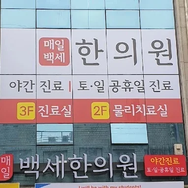

By the Numbers
10년+
2016년 개원
장기 운영 한의원
10만+
다이어트 누적 진료
축적된 임상 경험
4만구+
공진단 원내 제조
직접 빚은 공진단
전국
비대면 진료
어디서나 처방 가능
체질·생활습관·목표에 맞춘 맞춤형 한방 진료.
다이어트·공진단·통증 모두 한 곳에서.
엄마들을 위한 대사회복 다이어트, 매일감비환
굶고 운동해도 안 빠지는 건 의지가 아니라 대사의 문제입니다.

서울 중랑구 공릉로 21, 먹골역 도보 5분 거리의 매일백세한의원입니다. 2·3층 한 건물에 진료실과 물리치료실이 있어 다이어트·공진단·통증 치료를 한자리에서 받으실 수 있습니다. 야간·토·일·공휴일 진료로 직장인·학부모도 편하게 오십니다.
다이어트·공진단 제조·통증 치료까지, 송원석 원장이 실제 진료실에서 다루는 한방 이야기.
해당되신다면 상담 한 번 받아보세요. 안 맞으면 권하지 않습니다.
01
기초대사가 떨어진 30~50대, 산후 엄마, 다이어트 정체기. 매일감비환으로 체질·대사부터 다시 잡습니다.
02
단정적 효과 표현 대신, 체질에 맞는지 솔직하게 말씀드립니다. 안 맞으면 권하지 않습니다.
03
비대면 진료로 전국 어디서나 처방받으세요. 구글 설문 → 원장 전화 상담 → 한약 택배.
04
NMC 프로토콜로 염증부터 잡고 근골격 구조를 강화합니다. 연골 마모 속도를 늦추는 침·한약 병행 치료.
05
침·약침·물리치료가 한 건물에서. 야간·토일·공휴일 진료로 직장인도 편하게 오십니다.
06
사향·녹용 직접 제조 공진단. 매일백세한의원이 한약재 입고부터 환 제조까지 직접 관리합니다.
구글 설문지에 체질·증상·목표를 작성하시면 원장이 직접 전화 드립니다. 상담 후 처방이 확정되면 한약을 택배로 보내드립니다. 상담 자체는 무료로 진행됩니다.
매일감비환은 체질별 맞춤 처방으로, 단순 칼로리 억제보다 대사 회복에 초점을 맞춥니다. 처방 전 체질 확인이 필수이며, 이에 따라 성분과 복용 방법이 달라집니다.
아닙니다. 비대면 상담 후 원내 제조한 공진단을 택배로 받으실 수 있습니다. 처방에는 원장 전화 상담이 필수입니다.
증상과 손상 정도에 따라 다릅니다. 초기 염증 단계 집중 치료, 이후 가동성 회복과 구조 강화 순으로 진행합니다. 내원 시 원장이 직접 설명해 드립니다.
네. 평일 야간, 토요일 오전, 공휴일 진료를 진행합니다. 정확한 일정은 네이버 예약 페이지에서 확인하시거나 전화 문의 주세요.
전화·카카오톡·비대면 신청 모두 가능합니다.
평일 09:30–18:30, 토요일 09:30–13:00.